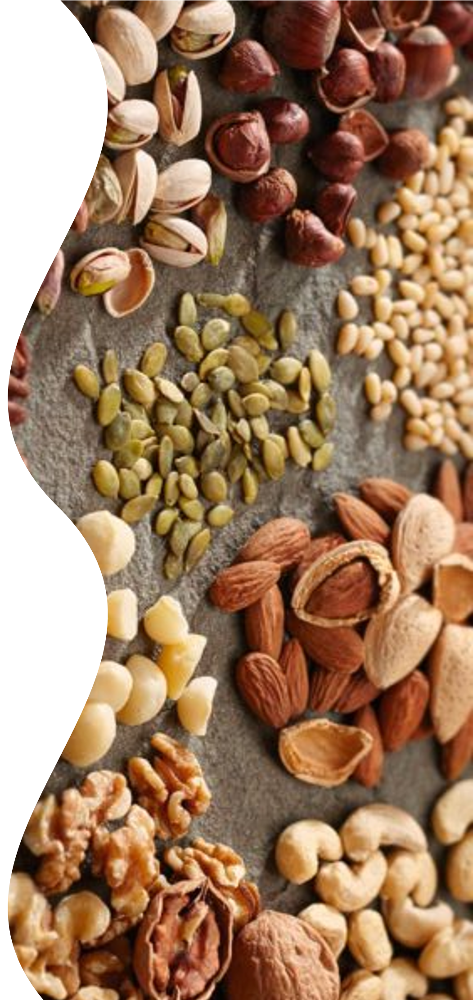

- Las legumbres son un aliado indiscutible para los vegetarianos, ya que aportan todo lo que tu cuerpo necesita.
- También se recomienda consumir semillas. Puedes comerlas crudas o cocidas, pero recuerda siempre dejarlas en agua.
- No te olvides de tomar setas, que brindan vitamina D y están presentes en muchas recetas sin carne.
- Los frutos secos pueden ser maravillosos tentempiés si se consumen con moderación, ya que aportan nutrientes esenciales y te hacen sentir saciado.
